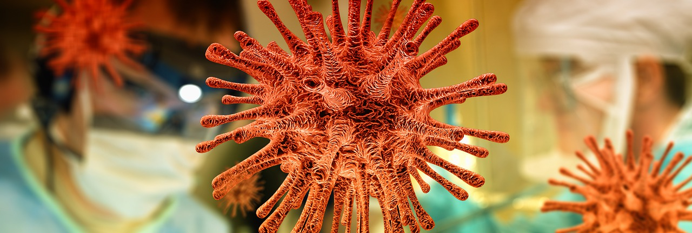
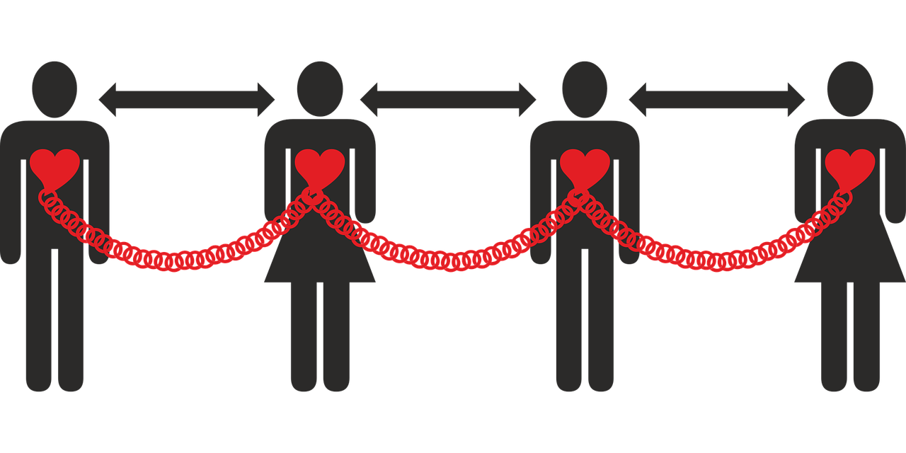

O nome coronavírus pertence a uma família de vírus (CoV), já conhecida entre pesquisadores. Dependendo do vírus da família, pode causar desde resfriados comuns a doenças mais graves, como a Síndrome Aguda Respiratória Severa (SARS) e a Síndrome Respiratória do Oriente Médio (MERS). Os vírus desta família podem sofrer mutações e apresentar algumas características diferentes um dos outros, assim, o Novo Coronavírus, que não era conhecido pelos pesquisadores anteriormente, recebeu a denominação SARS-CoV-2 pela Organização Mundial da Saúde (OMS) e a doença que ele provoca é chamada de COVID-19.
Até o momento, não se tem certeza de como o novo Coronavírus infectou as pessoas na China. Uma hipótese suspeita, por exemplo, é de que o vírus que vive no trato respiratório de morcegos tenha passado por um processo de mutação para conseguir se instalar no corpo humano.
A pandemia mudou a rotina da pessoas. Nesse momento, é necessário se adaptar a essas novas mudanças para evitar a contaminação e disseminação do vírus.
O novo Coronavírus se espalha de maneira muito rápida e fácil. O objetivo do isolamento social ou distânciamento social é diminuir a proliferação do vírus e, para que isso ocorra, evitar o contato físico e aglomerações é muito importante.
Caso seja necessário sair de casa, por exemplo, em casos de pessoas que precisam trabalhar fora e/ou precisam pegar transporte público, adote medidas de autocuidado:
Ao entrar em elvadores, tente entrar sozinho (se possível) ou entre com pessoas do seu grupo de convivência e que esteja se cuidando também. De qualquer maneira, durante o uso, evite encostar nas paredes e espelhos. Tente tocar as superfícies com o cotovelo, pois se esquecer e levar a mão nos olhos e na boca, terá menos chances de tê-las contaminado e se contaminar depois.
Além destas medidas, também é interessante:
Por último, dicas de alguns produtos que podem matar o Coronavírus e que podem ser usados para a higienização de ambientes e alguns objetos, são:
"A sociedade que o força a seguir determinados padrões, é a mesma que o protege e o faz sentir-se como parte de um todo estruturado e coeso."(Fonte: wikipedia)
Quando pensamos em sociedade e coletividade, existem as imposições, mas também existem padrões que protegerão toda ela. É aqui que temos que nos atentar: a pandêmia está aí e temos que cuidar um dos outros, assim, neste contexto de ajudar o próximo e também a si mesmo:
não se arrisque e coloque o outro em perigo também, caso não seja extritamente necessário.
Cuide de si e do próximo...pois:
você pode ter contato com alguém com coronavírus, se infectar e ficar assintomático (sem sintomas), achar que está bem e encontrar outras pessoas e ter os sintomas só alguns dias depois, mas, neste durante este período, o que pode ter acontecido? Você pode ter contaminado pessoas queridas que podem não ter tanta sorte e ficar muito doente, ou, infectar pessoas desconhecidas que também importam... afinal #todasasvidasimportam
Com conhecimento, evolução e interesse em resolver a situação na qual vivemos, várias áreas vem sendo estudadas e desenvolvidas para ajudar nesta pandemia. Algumas soluções podem ser citadas aqui:
- ventiladores mecânicos de baixo custo, desenvolvido junto com USP.
- material de proteção para profissionais de saúde, que estão na linha de frente, desenvolvidos por impressora 3D.
- aplicativos de reconhecimento da tosse característica do Covid, desenvolvido em associação com a Fiocruz.
- vacinas de diferentes origens sendo testadas ao redor do mundo, incluindo vacinas desenvolvidas por chineses, britânicos, alemães e russos, além de tantas outras, que estão em fases diferentes de desenvolvimento.
Deixe seu contato caso queira saber mais! Saúde a todas(os) nós! :)